Bodu
A suite of small, focused .NET libraries for collections, non-cryptographic hashing, cryptography, calendar computation, binary-to-text encoding, document formats, serialization, configuration, numerics, and money.
A family of focused primary libraries organized into seven topics — alongside companion packages for dependency-injection bridges, regional calendar data packs, fluent calendar authoring, plugin loading, and financial service registration. Every package shares a single solution, a single set of conventions, and a single bar for quality: nullable-enabled, analyzer-clean, deterministic builds, and framework-style XML documentation.
Core Foundations
The foundation every other package builds on — collections, buffers, extensions, argument validation, and text-encoding utilities. Topic overview →

Bodu.Core
The foundation package — a day-of-week WeekPattern value type, pooled buffers, async coordination primitives (AsyncLock, RateGate), railway outcomes (Option<T>, Result<T>), date / numeric / span / array extensions, and a centralized ThrowHelper.
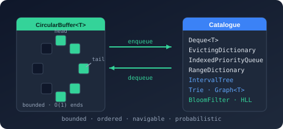
Bodu.Collections
The specialized collection catalogue — fixed-capacity rings (CircularBuffer<T>, Deque<T>), policy-driven caches (EvictingDictionary<TKey,TValue> with TTL expiry), navigable sets and dictionaries with rank/select, range-keyed lookups and overlap-storing interval trees, graphs, tries and multi-pattern text search, and probabilistic sketches (Bloom filter, count-min, HyperLogLog). Depends on Bodu.Core.
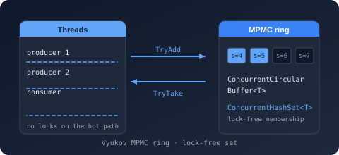
Bodu.Collections.Concurrent
The thread-safe collection companion — a lock-free Vyukov MPMC ConcurrentCircularBuffer<T> implementing IProducerConsumerCollection<T>, a lock-free split-ordered ConcurrentHashSet<T> with snapshot enumeration, and the lock-striped ConcurrentEvictingDictionary<TKey,TValue> bounded cache (all six eviction policies, optional TTL, single-flight GetOrAdd). Depends on Bodu.Collections.

Bodu.Text
Encoding detection and ergonomic text / byte conversion helpers over System.Text.Encoding — BOM-based EncodingDetection, plus EncodingExtensions and StringEncodingExtensions for span-, UTF-8-, and pooled-buffer-friendly transcoding, preamble handling, and validation. Ships in the Bodu.Core package.
Hashing & Cryptography
Two packages split by a single question — is there an adversary? Fast fingerprints, checksums, and check digits on one side; ciphers, AEAD, MACs, digests, and KDFs on the other. Topic overview →

Bodu.IO.Hashing
Non-cryptographic hashes on System.IO.Hashing.NonCryptographicHashAlgorithm — the full CRC RevEng catalogue (1–64 bits), Fletcher 16 / 32 / 64, Adler-32 / 32C / 64, FNV, CityHash, MurmurHash3, Pearson, classic string hashes — plus single- and multi-character check digits (Luhn, EAN, IBAN, ISBN, …).

Bodu.Security.Cryptography
Managed block ciphers (Threefish 256 / 512 / 1024, Serpent 128 / 256 / 512 / 1024, Camellia, Twofish, Blowfish, Skipjack), an AES adapter paired with six AEAD mode transforms (GCM, CCM, OCB, EAX, SIV, GCM-SIV), keyed hashes (SipHash, Poly1305), cryptographic digests (Tiger, CubeHash, Snefru, Whirlpool, BLAKE2/3, Skein, Shake, ASCON), and Merkle-tree hashing.
Globalization & Calendars
A resource-driven notable-date engine plus opt-in companions — fluent authoring, dependency injection, trust-gated plugins — and per-region holiday data packs. Topic overview →
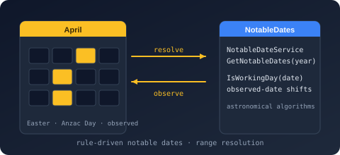
Bodu.Globalization.Calendar
Rule-driven notable-date resolution with fixed, day-of-week-in-month, offset, and algorithm strategies — including Gregorian and Orthodox Easter, Hindu Lunar dates, Losar, Vesak, Asalha Puja, and Qingming — driven from pluggable XML or JSON rule sources and an observance-adjustment pipeline. Region-specific public-holiday rules ship in independent Bodu.Globalization.Calendar.Americas, .AsiaPacific, .Europe, .Africa, and .MiddleEast data packs that release on their own cadence.
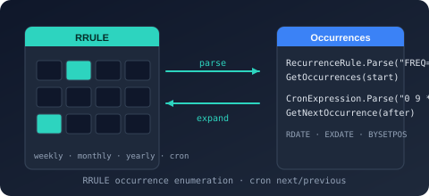
Bodu.Globalization.Recurrence
Recurrence-rule evaluation with no dependency on the calendar: RecurrenceRule (RFC 5545 RRULE), RecurrenceSet (rules composed with RDATE/EXDATE), CronExpression (Vixie five-field, optional seconds, @ macros), and AnchoredInterval. Every form answers next and previous occurrence over DateTime and DateTimeOffset, is pure in its arguments, and carries a defect-naming TryParse.
Text & Serialization
Three different jobs that all sound like "text" — binary-to-text codecs, document formats, and object serializers. Topic overview →
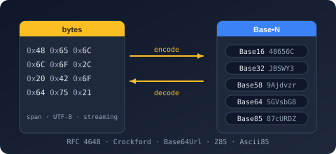
Bodu.Text.Encoding
Binary-to-text encoders for Base16, Base32, Base64, Base58, and Base85 with every common variant — RFC 4648 standard / hex-extended / URL-safe / MIME, Crockford, z-base-32, Bitcoin / Flickr / Ripple, Adobe Ascii85, ZeroMQ Z85 — plus Base45 (RFC 9285 QR codes), Base62 (compact identifiers), and Bech32 / Bech32m (BIP 173 / 350 checksummed addresses). The core encodings share the same modern API shape: span- and UTF-8-friendly overloads, OperationStatus streaming methods, length-prediction helpers, validation predicates, plus a unified IBinaryEncoding interface for runtime-pluggable encoding choice.

Bodu.Text.Filtering
A high-performance include/exclude filtering engine for lists of text values. Glob (wildcard, character-class, {a,b} alternation) and regex patterns compile once into an immutable TextFilter that classifies every pattern by evaluation cost and runs the cheapest strategies first — built for 100k+ values against tens to hundreds of patterns. Choose AnyMatch include/exclude sets (the Ant / MSBuild model) or LastMatchWins ordered rules (the gitignore model, with ! re-inclusion and gitignore-convention parsing), and observe everything through built-in statistics, per-pattern hit counts, and a per-decision observer hook.
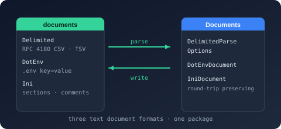
Bodu.Text.Formats
The line-oriented text formats, each a standalone System.Text.Json-shaped library reachable through the Bodu.Text.Formats umbrella package: Delimited (RFC 4180 CSV/TSV with real-world dialect policies and typed record streaming), DotEnv (.env key/value with export, quoting, and literal no-interpolation values), and INI (a comment-preserving mutable document model over sections and global keys). Every format exposes the same quartet: a forward-only Utf8*Reader/Utf8*Writer pair, a serializer, a mutable node DOM, and a read-only document DOM.

Bodu serializers — Bencode, TOML & YAML
Three self-contained serializers that map your own types to and from a format — a shared architecture and System.Text.Json-aligned shape. Each ships a …Serializer, a mutable …Node and a read-only …Document DOM, and a low-level Utf8…Reader / Utf8…Writer pair. Bencode covers BitTorrent BEP 3; TOML covers v1.0.0 / v1.1.0; YAML the 1.2 core schema with block and flow collections, anchors, and multi-document streams.
Configuration
Layered, EditorConfig-style configuration — a parser/resolver plus a bridge into the Microsoft.Extensions.Configuration pipeline. Topic overview →

Bodu.Text.Configuration
INI / EditorConfig-style configuration parser with four profiles (Bodu, EditorConfigCompatible, Strict, Relaxed), structured diagnostics, key pattern matching, and a typed view layer for projecting flattened paths into a ConfigurationView consumers can read without parsing twice.
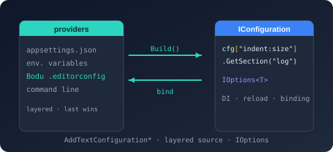
Bodu.Extensions.Configuration.Text
Bridge between Bodu.Text.Configuration and Microsoft.Extensions.Configuration — file-based and stream-based configuration sources and providers that surface Bodu-parsed INI documents through the standard ASP.NET / Generic Host configuration pipeline.
Numerics & Financial
Exact arithmetic — rational numbers and intervals, and the money, currency, and exchange-rate primitives built on top of them. Topic overview →
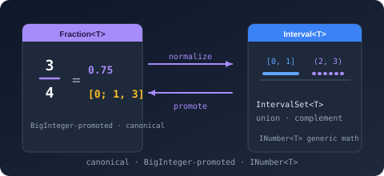
Bodu.Numerics
Exact rational arithmetic (Fraction<T>) over any IBinaryInteger<T> backing type with canonical-form auto-reduction, BigInteger-promoted intermediates, the full INumber<T> / ISignedNumber<T> surface, mixed-number and Unicode-vulgar-fraction formatting, continued-fraction expansion, and best rational approximation — plus Interval<T> for closed / open / half-open bounded numeric intervals with intersection, union, and adjacency operations.

Bodu.Financial
Type-safe monetary primitives: Money<TCurrency> where the currency is encoded as the type parameter so cross-currency arithmetic fails the build, Money for runtime-tagged scenarios, MoneyBag for multi-currency portfolios, a shipped catalogue of 184 ISO 4217 currencies (active and historic), an audit-grade exchange-rate provider stack with both timeless and dated lookup, fair allocation, cash rounding, sub-minor-unit-precise Fraction<BigInteger> interop, and three JSON wire shapes (strict / lenient / compact).
Binary Formats & I/O
Legacy binary container and document formats — a general-purpose compound-file container (read, edit, and author) with narrower read-only format readers layered on top. Topic overview →
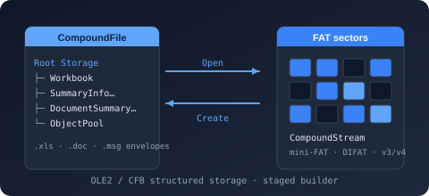
Bodu.IO.Compound
A reader, editor, and writer for the OLE2 / Compound File Binary (CFB) container — the structured-storage "file system in a file" behind legacy Office documents (.xls, .doc, .ppt, .msg). Navigates the RootStorage hierarchy, reads each named stream's bytes through a seekable CompoundStream cursor (buffered or on-demand), edits and authors containers with a transactional Commit / CommitAsync, and reads and writes the OLE summary-information property sets. The narrow BIFF5 and BIFF8 .xls reader Bodu.Formats.Excel.Binary is built on top of it, with the record stream decoded by Bodu.IO.Biff.
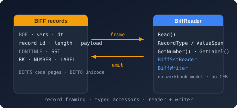
Bodu.IO.Biff
A low-level codec for the Excel Binary Interchange File Format (BIFF5 and BIFF8) record streams found inside legacy .xls workbooks — the substrate beneath Bodu.Formats.Excel.Binary, in the same relation Bodu.IO.Pst has to Bodu.Formats.Outlook.Pst. The forward-only, allocation-free BiffReader frames each record, establishes the version from BOF and the code page from CODEPAGE, and exposes typed accessors for cell, sheet, and workbook-globals records; BiffSstReader walks the BIFF8 shared string table across its CONTINUE records; and BiffWriter emits BIFF5 or BIFF8 records. No compound-file dependency, no workbook or cell model, no formula evaluation.
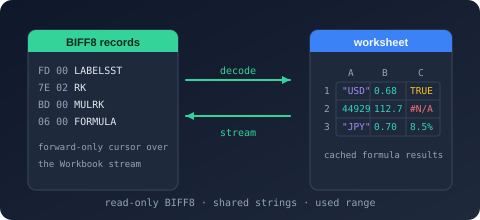
Bodu.Formats.Excel.Binary
A narrow, read-only BIFF5 and BIFF8 (.xls) reader built on Bodu.IO.Compound and Bodu.IO.Biff that surfaces the raw cell values of each worksheet — strings, numbers, booleans, and errors, including a formula cell's cached result — with date-format detection, serial-date conversion, each sheet's declared used range, and the workbook document properties. Offers a forward-only streaming ExcelWorksheetReader and a randomly addressable ExcelWorksheet, without formula evaluation, styling, or higher-level interpretation.
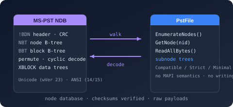
Bodu.IO.Pst
A low-level, read-only container reader for the Outlook personal-folders format (PST / MS-PST, Unicode and ANSI). Reads the node database — header, node and block B-trees, block data with the permute and cyclic encodings decoded and checksums verified, data and subnode trees — and the LTP layer over it, exposing each PstNode's property-context and table-context views with wire-typed values. No MAPI semantics and no writing; the substrate the .pst mail-store reader is built on.

Bodu.Formats.Outlook
The Outlook format readers: Bodu.Formats.Outlook is the shared MAPI value model (property tags and types, the tag-addressed MapiPropertyCollection, named-property identities); Bodu.Formats.Outlook.Msg opens a .msg message over Bodu.IO.Compound and Bodu.Formats.Outlook.Pst opens a .pst mail store over Bodu.IO.Pst — folders, messages, recipients, attachments, embedded messages, named-property resolution, and the text / HTML / compressed-RTF bodies. Read-only; no MAPI session emulation.
Companion packages
The cards above are the headline libraries. Four of them head a family of opt-in companions — serialization bridges, dependency-injection registrations, caching backends, data packs, and tooling — that ship as separate packages so the core library stays dependency-free. The package matrix lists every one of the 60 packages with its dependencies and install command.
| Headline package | Its companions |
|---|---|
Bodu.Numerics |
Bodu.Numerics.Serialization.Json — the System.Text.Json bridge. |
Bodu.Financial |
Bodu.Financial.Serialization.Json, Bodu.Financial.ExchangeRates with its eleven per-source provider packages and three caching backends, and Bodu.Financial.DependencyInjection. |
Bodu.Globalization.Calendar |
Builder, Caching (with SQLite and distributed backends), dependency injection, Plugins, five regional data packs, and the rule-pack toolchain. |
| The serializers | Bodu.Text.Serialization — the shared engine all six compile against — and the source generator for reflection-free binding. |
Install
Every package ships on NuGet. The
package matrix carries the full
dotnet add package list — all 60 packages, grouped by family, including the
regional calendar data packs, the exchange-rate providers, the caching and
dependency-injection companions, and the dotnet tool install command for the
rule-pack toolchain.
Design principles
- Nullable reference types are enabled throughout. Public APIs declare their null-intent explicitly.
- Analyzer-clean: StyleCop, Roslynator, .NET analyzers, AsyncFixer, and Threading analyzers run at build time; doc-comment warnings are treated as errors.
- Deterministic builds for reproducible package outputs.
- Documentation-first: every public type and member carries XML documentation in US English, which drives this API reference.
- Minimal external runtime dependencies. Core libraries depend only on the BCL. Extension packages (
Bodu.Extensions.Configuration.Text,Bodu.Globalization.Calendar.DependencyInjection) intentionally bridge to the Microsoft.Extensions ecosystem. - MIT licensed.